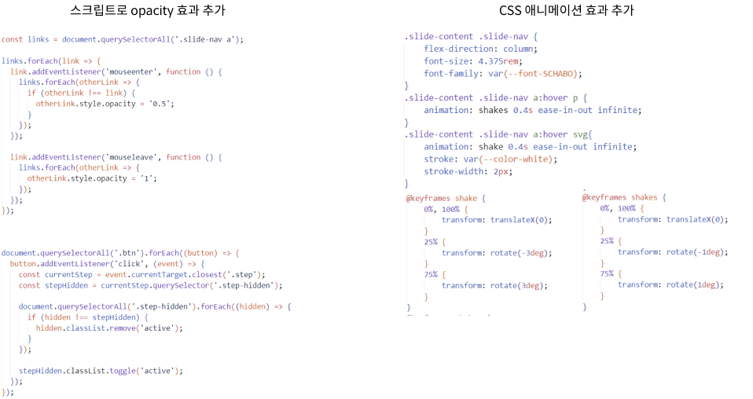

T1 Shop
리디자인 & 퍼블리싱
T1 Shop Responsive Web Redesign & Publishing
100% 개인작업
T1 Shop Responsive Web Redesign & Publishing
100% 개인작업
T1-SHOP는 T1 eSports 팀과 관련된 공식 쇼핑몰이며 팬들이 T1 팀의 다양한 공식 굿즈와 상품을 구매할 수 있도록 돕는 플랫폼입니다
이를 기반으로 T1 eSports의 브랜드 아이덴티티를 반영한 디자인과 GSAP 애니메이션을 활용하여
사용자에게 일관된 경험과 다이나믹한 상호작용을 제공할 수 있도록 리디자인 진행했습니다

사용자가 특정 링크 위에 마우스를 올리면, 해당 링크 외 다른 링크의 투명도가 0.5로 변경, 마우스가 벗어나면 모든 링크의 투명도가 원래 상태인 1로 복원
• CSS의 transition 속성을 활용하여 opacity 변화가 부드럽게 처리
• 스크립트 사용으로 hover 시에 다른 섹션은 비활성화되어 하나의 섹션만 활성화
박스의 자동 활성화와 마우스 인터랙션 효과를 동기화하여 제어하는 문제 스크립트 사용
• setInterval로 1.8초마다 activateBox를 호출해 자동 회전을 구현
• mouseenter 이벤트로 자동 회전을 중지하고 해당 박스에만 active와 shake 클래스 추가
• mouseleave 이벤트로 active와 shake 클래스를 제거하고 자동 회전을 재시작
• activateBox 함수에서 현재 인덱스를 기반으로 박스를 순차적으로 활성화
GSAP 사용으로 강력한 애니메이션 처리 도구로 CSS 애니메이션보다 더 부드러운 효과 제공
• 화면에서 애니메이션 효과를 줄 수 있도록 .under-line 안에 .content 요소를 추가로 만들어, 이를 대상으로 애니메이션 효과를 설정
• GSAP을 사용하여 .content의 height 속성을 조정하며 부드러운 확장 효과를 만들며 화면에서 사라질 경우 다시 초기 상태로 리셋되도록 구성
• 애니메이션이 실행된 뒤 .content를 gsap.set으로 초기화하여 다음 진입 시 다시 애니메이션이 실행
이번 프로젝트는 내가 좋아하는 E스포츠 팀과 관련된 작업으로 큰 흥미를 느끼며 진행할 수 있었습니다
또한, 새로운 사이트 구성 시도를 통해 창의성을 발휘하고 몰입감을 더욱 높일 수 있었습니다.
이번 기회에 GSAP뿐만 아니라 CSS 애니메이션을 많이 활용하게 되었으며, 이 조합이 사용자에게 더 많은 시각적 재미를 제공할 수 있다는 점을 깨달았습니다
CSS 애니메이션을 주로 사용했던 이번 프로젝트는 처음 시도였는데, GSAP와 결합하여 더 풍성한 효과를 연출할 수 있었습니다.
이번 프로젝트에서는 처음에 어려웠던 스와이퍼와 지도 활용을 성공적으로 적용할 수 있었습니다. 이전에는 이 두 가지 요소를 사용하기가 두려웠지만,
여러 번 시도한 결과 이번 프로젝트에서는 큰 어려움 없이 자연스럽게 사용할 수 있게 되었습니다. 이제는 스와이퍼와 지도를 자신 있게 활용할 수 있을 것 같습니다.